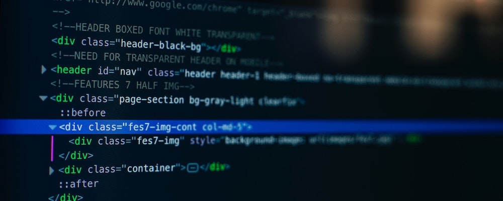

The Basic Language of the Web: HTML
Posted by Tairrque Baker on Monday, February 23rd 2026

All modern websites and web applications are built using 3 fundamental technologies. HTML, CSS & JavaScript. These are the 3 languages of the web.
In this post, lets focus on HTTML. We will learn what HTML is all about, and why you should learn it
What is HTML?
HTML stands for Hyper Text Markup Language It is a markup language that web developers use to structure and describe the content of a webpage (not a programming language)
HTML consist of elements that describe different types of content: paragraphs, links, headings, images, video, etc. Web browsers understand HTML and render HTML code as websites.
In HTML, each element is made up of 3 parts:
- The opening tag
- The closing tag
- The actual element
You can learn more at MDN Web Docs
Why you should learn about HTML?
There are countless reasons for learning the fundamental language of the web. Here are 5 of them:
- To be able to use the fundamental web dev language
- To hand-craft beautiful websites instead of relying on tools like WordPress or Wix
- To build web applications
- To impress friends
- To have fun
Hopefully you learned something new here. See you next time!